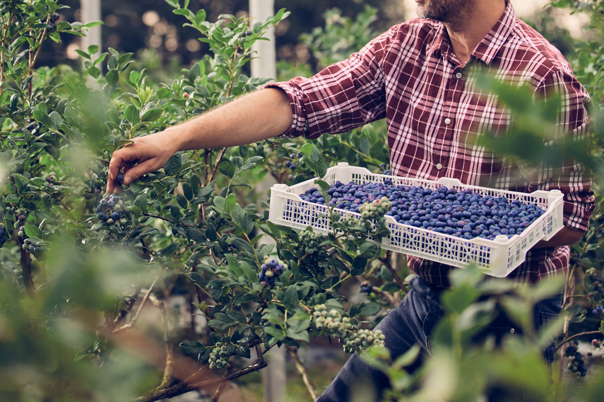
Árboles Frutales y Forestales
Variedades certificadas propagadas con genética de centros de investigación.
Trabajamos con centros de investigación y otros actores locales que nos proveen genética que Pilvicsa endurece y propaga. Ofertamos distintos formatos en base a cómo el agricultor quiera manejarse en campo.
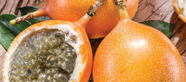 | Granadilla Passiflora ligularis |
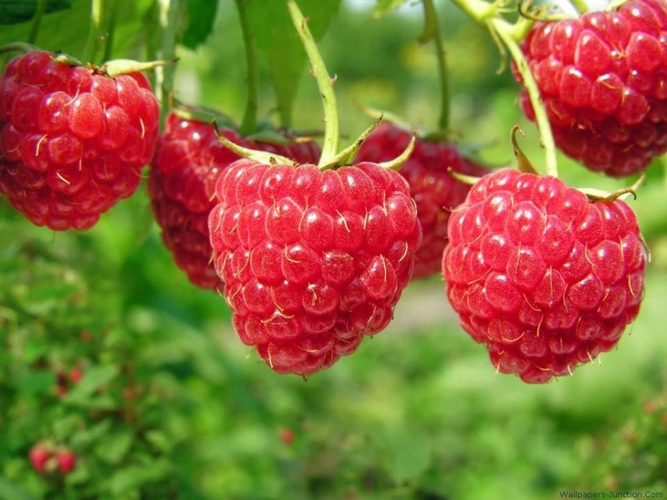 | Frambuesa Rubus idaeus |
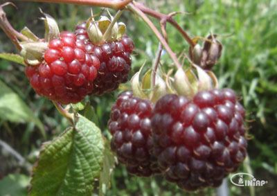 | Mora sin Espina Rubus glaucus |
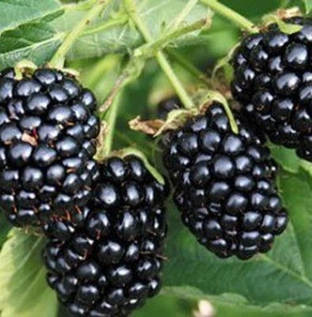 | Mora con Espina Rubus glaucus |
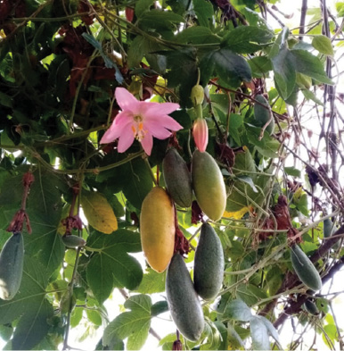 | Taxo Passiflora mollissima |
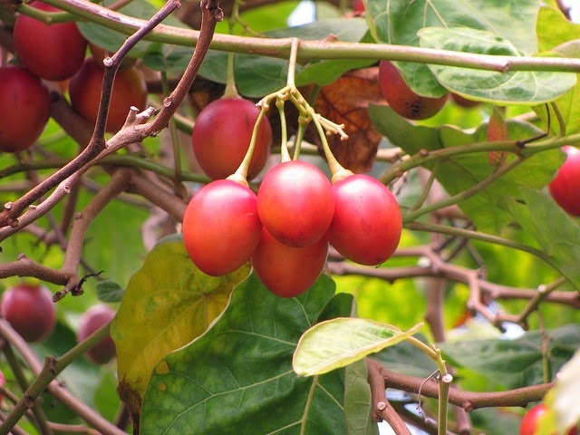 | Tomate de Árbol Solanum betaceum |
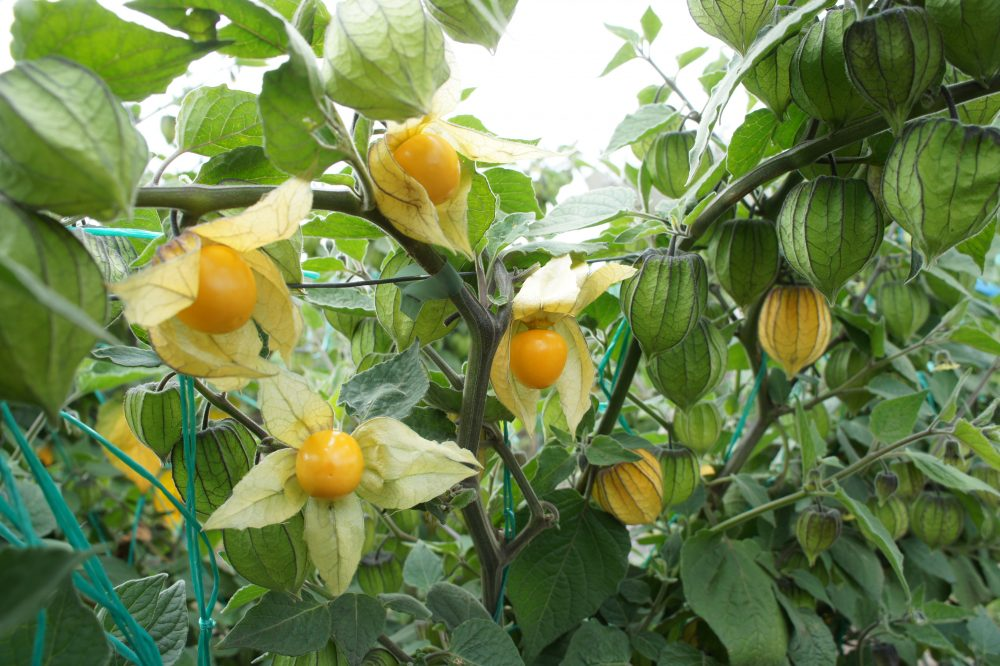 | Uvilla Physalis peruviana |
 | Arándanos Vaccinium corymbosum |
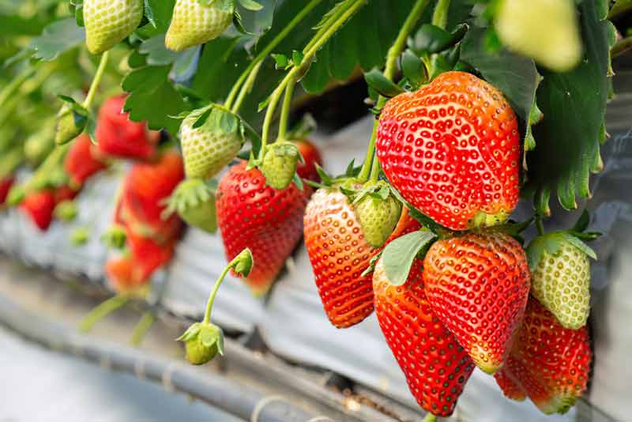 | Fresa Fragaria × ananassa |
 | Claudia (Ciruela Andina) Prunus salicina |
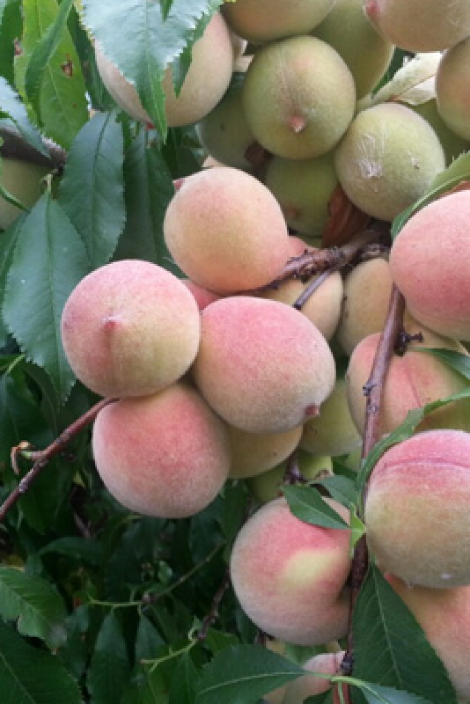 | Durazno Injerto Prunus persica |
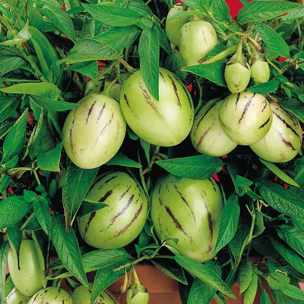 | Pepino Dulce Solanum muricatum |
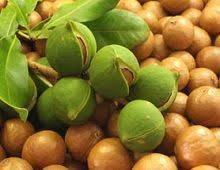 | Nuez Injerta Juglans neotropica |
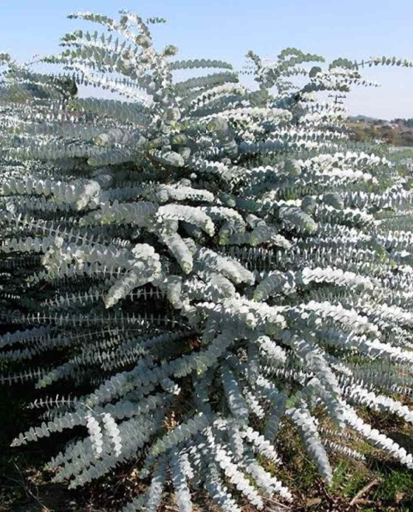 | Eucalipto Baby Blue Eucalyptus pulverulenta |
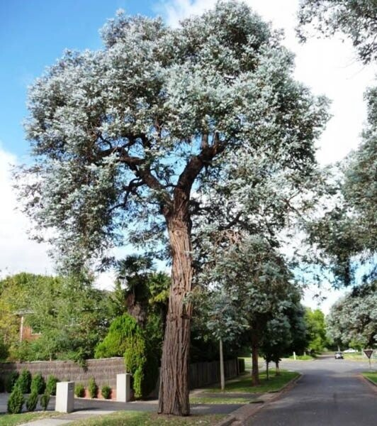 | Eucalipto Silver Dollar Eucalyptus cinerea |
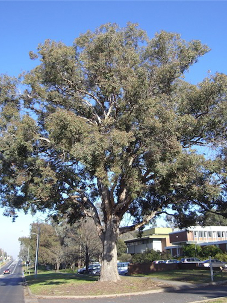 | Eucalipto Poliantemus Eucalyptus polyanthemos |
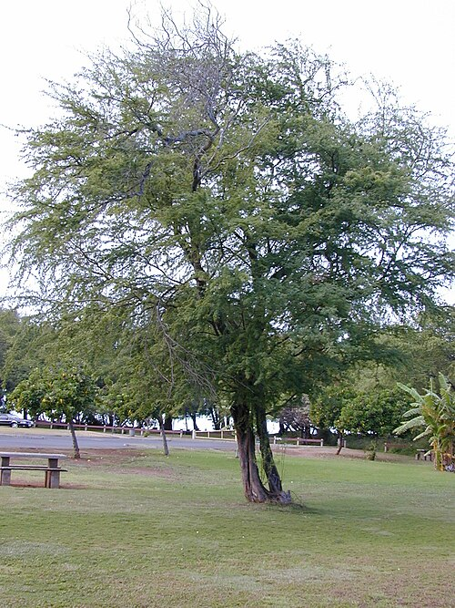 | Guarango Caesalpinia spinosa |
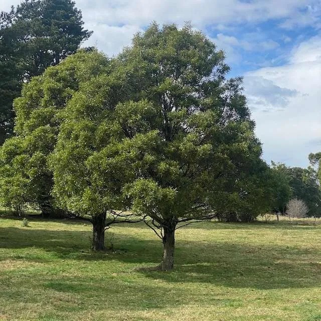 | Acacia Melanoxylon Acacia melanoxylon |
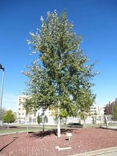 | Álamo Blanco Populus alba |
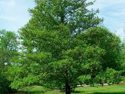 | Aliso Alnus acuminata |
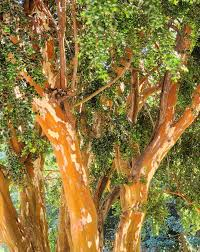 | Arrayán Myrcianthes hallii |
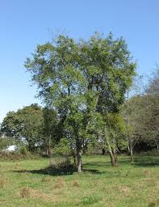 | Capulí Prunus serotina subsp. capuli |
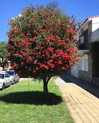 | Cepillo Rojo Callistemon citrinus |
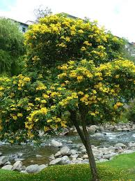 | Cholán Tecoma stans |
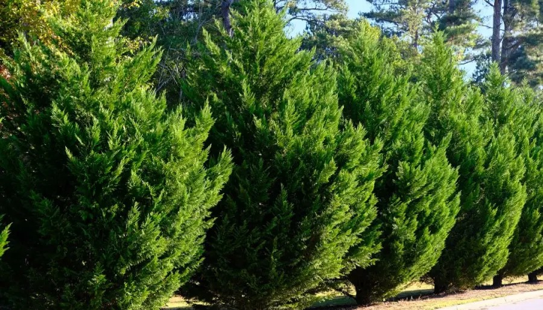 | Ciprés Cupressus macrocarpa |
 | Ciprés Brasilero Cupressus lusitanica var. benthamii |
 | Eugenia Piramidal Eugenia myrtifolia |
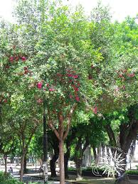 | Eugenia Arbórea Eugenia spp. |
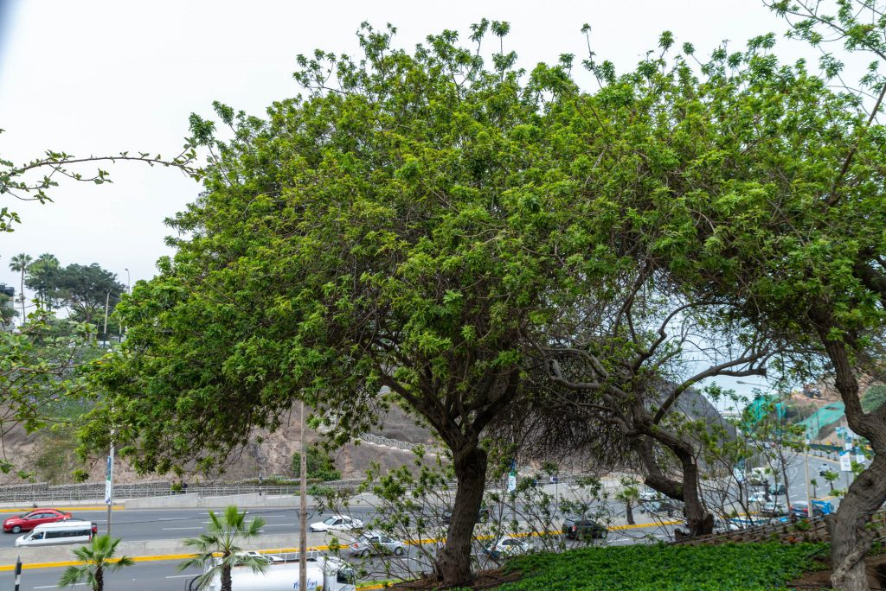 | Molle Schinus molle |
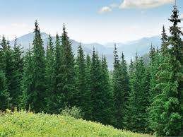 | Pino Pinus radiata / P. patula |
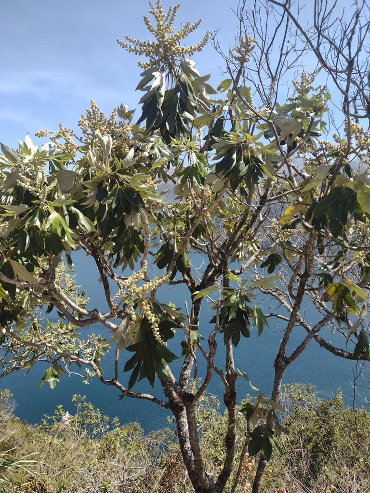 | Pumamaqui Oreopanax ecuadorensis |
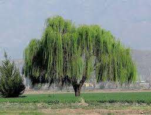 | Sauce Salix humboldtiana |
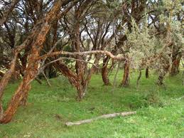 | Yagual Polylepis lanuginosa |
 | Arupo Chionanthus pubescens |
 | Sacha Capulí Vallea stipularis |
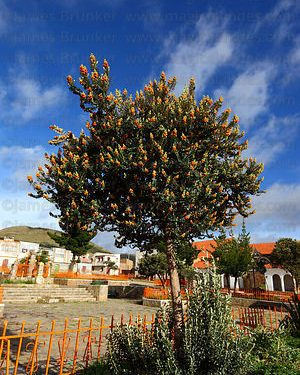 | Quishuar Buddleja incana |
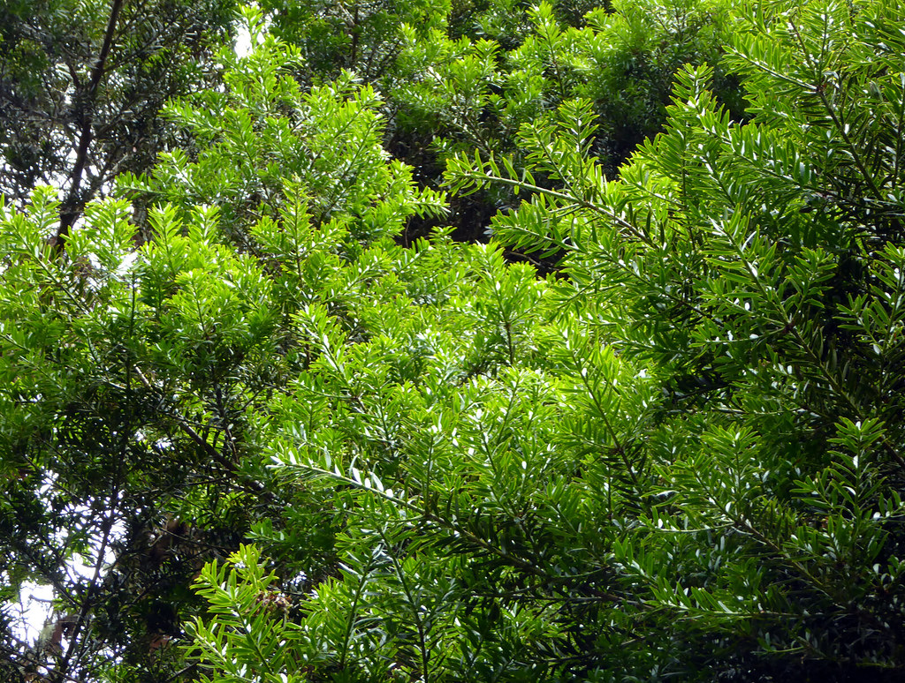 | Romerillo Prumnopitys montana |
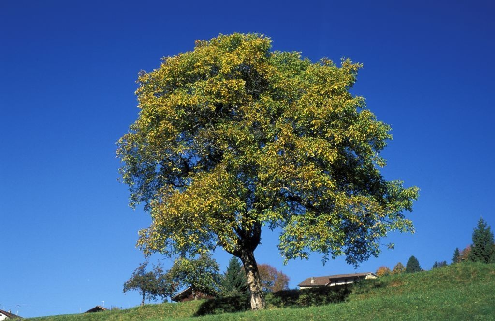 | Nogal Juglans neotropica |
Si lo que buscas no está en la lista, conversemos para desarrollar un programa de propagación juntos.
Si lo que buscas no está en la lista, conversemos.
Contactar a PilvicsaNuestro Video Corporativo.
Nuestra experiencia, procesos y tecnologia.
Estamos constantemente compartiendo nuevas tecnologias, cultivos y aliados.